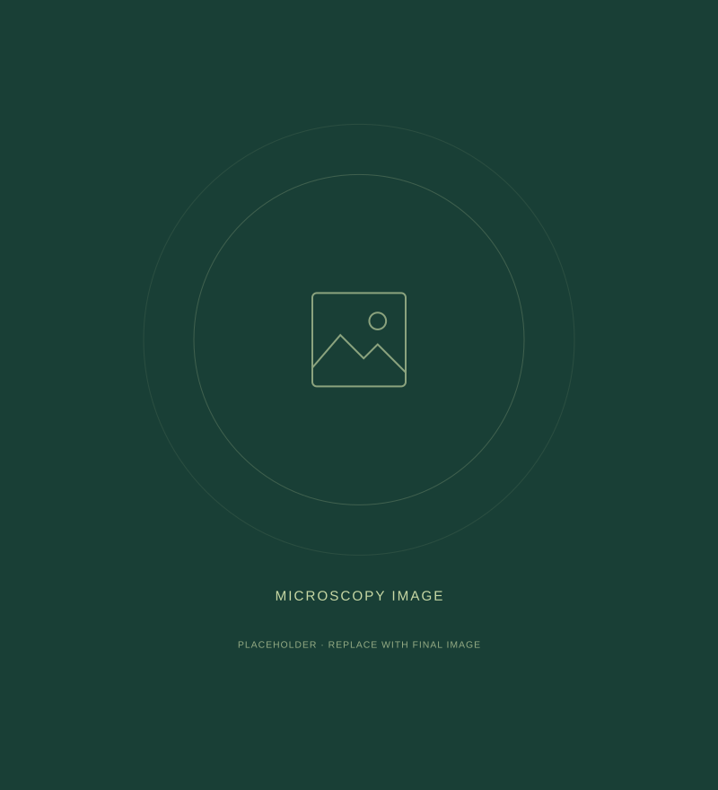
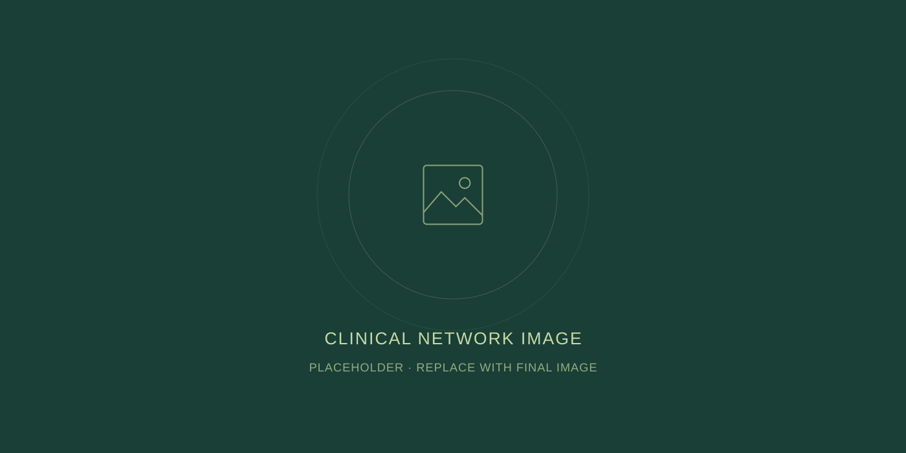

Quality you can
build on.
Standardized pathology review, verified ischemic times, and preserved nucleic acid integrity. Every specimen is prepared for your next step.
Our quality commitment
Ethically sourced human biospecimens.
Uncompromising quality.
Weeks, not months.
Connecting biopharma innovators directly to a global network of accredited clinical institutions. Less complexity. More discovery.

We’re rethinking biospecimen access, so you can focus on the questions that move science forward.
Standardized pathology review, verified ischemic times, and preserved nucleic acid integrity. Every specimen is prepared for your next step.
Our quality commitmentDirect integration with hospitals and surgical centers removes unnecessary broker margins. Premium specimens. Transparent economics.
Meet the Bhava modelActive clinical workflows and responsive collection protocols turn custom feasibility requests into shipments in weeks, not months.
Start your studyDirect clinical connections create a better experience at every stage of your study.

ILLUSTRATIVE PLACEHOLDEREvery breakthrough starts with trust. Our approach puts informed consent, patient privacy, and institutional oversight at the heart of every collection.
Explore our ethics frameworkTell us what you need. We’ll help you find what’s possible.
From prospective collection of treatment-naive cohorts to retrospective access to archived clinical remnants, we supply research-ready human biomaterials across key therapeutic areas.
Explore the disease indications supported by our clinical network.
Extensive access to Crohn’s Disease, Ulcerative Colitis, and matched non-IBD control tissues, complete with endoscopic severity scores and medication histories.
Request this cohortAutoimmune cohorts with longitudinal biofluid draws to support the study of disease progression and immune response.
Request this cohortCharacterized primary tumor resections, adjacent normal tissue, and longitudinal serum/plasma pairs across key cancer indications.
Request this cohortAcute and chronic inflammatory cohorts, NAFLD/NASH, and specialized biofluid profiles for focused translational studies.
Request this cohortHistologically characterized remnant biopsies and surgical resections with matched adjacent normal tissue.
Serum, plasma (K2-EDTA/Streck), and whole blood drawn concurrently with tissue collection.
High-viability Peripheral Blood Mononuclear Cells (PBMCs) processed under standardized density gradient protocols.
Tailored clinical protocols configured to your exact inclusion/exclusion criteria and treatment history.
Custom inclusion/exclusion criteria, specialized blood collection tubes for RNA/DNA preservation, specific draw timings, and customized aliquot volumes.
Fast-turnaround access to curated, verified FFPE archive blocks with full longitudinal survival and treatment metadata.
Simultaneous collection of tissue, plasma, and serum from a single donor to power multi-omic biomarker validation.
Tell us what you need. We’ll help you find what’s possible.
Every sample provided by Bhava Biosciences is governed by verified ethics approvals and strict international compliance standards.
All partner hospital sites operate under active, registered Institutional Review Board (IRB) and Institutional Ethics Committee (IEC) approvals, with CDSCO/DHR registration and US OHRP/DHHS alignment.
Prospective collections use Participant Information Sheets (PIS) and Informed Consent Forms (ICF) explicitly granting commercial research rights, future biomedical exploration, and cross-border data usage.
Retrospective tissues are gathered in accordance with ICMR National Ethical Guidelines and international remnant waiver provisions, ensuring diagnostic integrity is never compromised.
Source medical centers assign secure alphanumeric identification codes. Direct personal identifiers, including names, addresses, and national ID numbers, are removed before data transfer.
Our framework follows HIPAA privacy standards, the General Data Protection Regulation (GDPR), and local data protection laws.
Every tissue block and biofluid aliquot undergoes standardized clinical pathology review to support downstream sequencing and spatial biology.
Transport follows IATA Packing Instruction 650 (UN 3373, Category B Biological Substances), with real-time temperature monitoring and full chain-of-custody logging from operating theatre to laboratory dock.
Tell us what you need. We’ll help you find what’s possible.
Bhava Biosciences was established to solve a fundamental challenge in biomedical discovery: translational research moves as fast as specimen access allows.
Accelerating drug discovery and diagnostic innovation through better access to human biospecimens.
We provide life-sciences researchers with rapid, cost-effective, and fully characterized human biospecimens through an ethically governed, direct hospital network.
Traditional specimen procurement is plagued by layers of brokers, limited clinical visibility, and prohibitive price points. We believe researchers deserve a better way.
Founded by life-sciences professionals who understand translational research firsthand.
Headquartered in Delaware, USA, with an integrated clinical network in South Asia, Bhava combines global biological diversity with American corporate governance and regulatory compliance.
Corporate headquarters
Integrated clinical network
Patient consent, privacy, and institutional governance guide every collection.
Clinical characterization and specimen integrity are fundamental to meaningful research.
Your study specifications shape our sourcing, from feasibility to final shipment.
Tell us what you need. We’ll help you find what’s possible.
Submit a cohort feasibility request. Tell us your study specifications so our scientific team can assess the right specimens for your research.